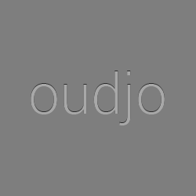

<!DOCTYPE html>
<link rel="import" href="../bower_components/polymer/polymer.html">

<link rel="import" href="../bower_components/core-icon/core-icon.html">
<link rel="import" href="../bower_components/core-icons/av-icons.html">
<link rel="import" href="../bower_components/paper-shadow/paper-shadow.html">
<link rel="import" href="../bower_components/paper-button/paper-button.html">
<link rel="import" href="../bower_components/paper-progress/paper-progress.html">
<link rel="import" href="../bower_components/paper-slider/paper-slider.html">
<link rel="import" href="../bower_components/paper-icon-button/paper-icon-button.html">

<polymer-element name="oudjo-controller">
    <template>
        <link href="oudjo-controller.css" rel="stylesheet">

        <paper-shadow class="container" z="4">
            <!-- Album art -->
            

            <!-- Title and artist -->
            <paper-shadow class="song-info-shadow" z="1">
                <div id="song-info">
                        <div id="song-title">oudjo</div>
                        <div id="song-artist">--</div>
                </div>
            </paper-shadow>

            <!-- Control buttons -->
            <div layout horizontal>
                <paper-button id="button-previous" class="control-button" on-tap="{{onPreviousPress}}">
                    <core-icon icon="av:skip-previous" />
                </paper-button>

                <paper-button id="button-play" class="control-button" on-tap="{{onPlayPress}}" flex>
                    <core-icon icon="av:play-arrow" />
                </paper-button>

                <paper-button id="button-next" class="control-button" on-tap="{{onNextPress}}">
                    <core-icon icon="av:skip-next" />
                </paper-button>
            </div>

            <div layout vertical>
                <!-- Progressbar -->
                <div layout horizontal>
                    <paper-progress id="song-progressbar" flex />
                </div>

                <!-- Volume -->
                <div layout horizontal>
                    <paper-icon-button id="button-mute" icon="av:volume-up"></paper-icon-button>

                    <paper-slider id="volume-slider" flex self-center />
                </div>
            </div>
        </paper-shadow>
    </template>
    <script src="oudjo-controller.js"></script>
</polymer-element>
